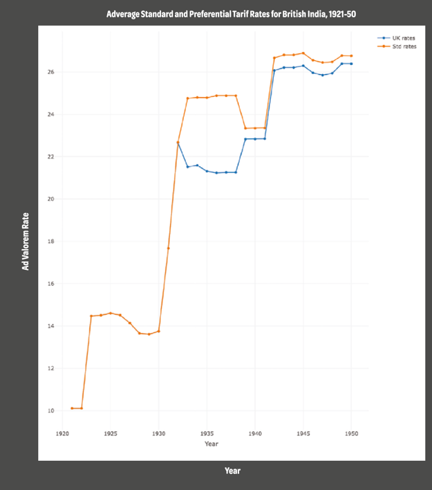

收录于合集
#历史政治学 58 个
#民主与民主化 34 个
#比较政治学 121 个
文献来源： Nikhar Gaikwad, “Historical Sources and the Study of Trade Politics in Developing Democracies,” Newsletter of the Organized Section in Comparative Politics of the American Political Science Association, 29(2), Fall 2019, pp.64-71.
作者简介： Nikhar Gaikwad，哥伦比亚大学政治学系助理教授。
一、文章简介
比较政治经济学和国际政治经济学的学者们一直都致力于解释国内政治联盟如何影响国际经济政策的结果，尤其是在制定贸易政策的语境下。研究国内政治对贸易的影响具有启发性。因为这些政策冲突对社会福利具有巨大的影响，而且贸易政治能够为政治学家关注的许多其他形式的再分配决策提供洞见。以北美和西欧案例为背景发展起来的理论和实证分析，是目前关于国内政治如何影响贸易的学术研究主流。鉴于贸易在西方经济发展的历史中发挥的巨大作用，以及这些国家的国内政治在过去两个世纪里对全球贸易流动产生的巨大影响，这种关注是可以理解的。
然而，聚焦于发达国家中围绕着贸易展开的选举政治相应地使学者忽视了发展中民主国家贸易政策冲突的来源。这种忽视令人遗憾。发展中国家在制度和文化背景上存在的巨大差异引发了新的理论思考，即政治联盟和利益集团在选举过程中能够通过何种渠道影响决策结果。一般来说，研究者们也可以从发展中国家收集定性和定量数据来检验发达民主国家研究结果的外部有效性，同时检验关于新兴经济体立法机构一些独特的理论预设。
在本文中，作者首先讨论了研究者们如何通过贸易政治的历史数据来研究那些用更现代的数据源难以回答的问题，并指出在发展中国家的档案馆和图书馆收集数据的机会。作者随后用其对南亚贸易政治的研究，强调了在对发展中国家贸易历史的研究中更新传统叙事的重要方式，进而加深我们对围绕再分配性经济决策的联盟政治的理解。
二、档案资源与贸易政治研究
致力于分析发展中国家的贸易决策或贸易政治的数据的学者们面临着严峻的挑战。大多数关于贸易政策的公开数据集只能提供近几十年的数据，比如联合国发展和贸易大会（UNCTAD）的贸易分析信息系统（TRAINS）数据库。该数据库为研究者们提供了产品关税的数据，但是只覆盖了1988年以来的数据，而且对于很多发展中国家，数据库所能提供的资料甚至更少。在大多数发展中国家，立法者关于贸易决策的辩论、政治家的演讲及对各工会和行会的竞选承诺、行业团体和政策制定者之间的沟通以及其他对于研究国内贸易政治而言十分关键的材料都很难获取。
极少有政府会系统地收集并将这些数据对研究者们开放；获取与政策审议有关的同期记录有许多严格的限制。作者曾在访谈中与印度工商部门的官员们进行交流，回答者经常会要求保密，并表示涉外政策问题中的政治考量并不适合公开。当研究者们试图探究影响政策的非正式渠道时，这些挑战就变得更为严峻。比如，Kochanek (1996)提供了充分的证据表明在自由化时期，印度的公司和行业协会反对政策变动时“发展出了一种高度复杂、旨在实现特殊利益的离散游说模型”（同样可见于 Chari and Gupta 2008; Gaikwad and Scheve 2016）。
对于获取空开数据过程中受到的限制，学者们可以通过从历史资料中搜集信息来规避。比如在南亚，殖民当局就保存了大量记录，包括贸易政策清单、关于贸易的立法审议、商业和关税委员会报告、公司和行会申请保护的请愿书以及工会讨论的内容。敏感记录如英国和印度政府之间的机密通信，早已被解密，研究人员很容易获得。反过来，档案可以为学者们提供丰富的资源，使其从历史视野出发解读经济决策的政治背景。
作者曾在印度国家档案馆、商务部图书馆、中央秘书处图书馆、印度商人协会以及大英博物馆等资料库中发现大量与南亚贸易政治有关的历史资料。这些历史资料都有助于重塑关于决策争论的国内决定因素的传统理论。
三、殖民统治下的贸易决策
在19世纪中期到20世纪中期的大部分时间里，大量发展中国家处于殖民或半殖民状态(Mahoney 2010)。很长一段时间里，许多学者认为殖民统治主要由贸易推动；殖民者对殖民地施加的政治和军事控制，是为了构建对宗主国有利的贸易关系(cf. Hobson 2011; Lenin 1988)。Kleiman (1976, 459)总结了这些观点，认为宗主国通过“强迫殖民地居民以高价购买进口商品，以低于国际市场的价格出售出口商品”，从而建立起一个“以贸易为手段对殖民地进行经济剥削”基础上的贸易体系。在这些观点中，贸易政策被视为殖民者重要的工具。他们无情地利用这些工具以促进宗主国制造商的经济利益，并伤害了殖民地当地的居民和生产商的利益。
同时，从印度到南非再到马来西亚，尽管许多殖民地在很长一段时间内受制于殖民统治，但是它们获得了有限的选举权和决策自主权。贸易政策是少数几个被殖民地议会控制的政策手段中的一个(Tomlinson 1975)。那么，这一从遥远的宗主国获取的有限选举权，是如何影响与贸易有关的经济利益在立法机构中的集聚和表达？如果来自宗主国的制造商和殖民地的生产商之间发生冲突，谁的声音将会占据上风并影响政策呢？
在以西方国家贸易决策为研究主题的背景下，这样的研究问题不太可能被提出；但是对于理解曾是殖民地的国家中贸易政治冲突的根源，这些问题却至关重要。在一篇工作论文中，Don Casler和作者尝试通过深入分析英国殖民时期印度工业进口关税的数据，以及印度议会中的立法辩论以及关于贸易保护主义的大量同期资料来回答这些问题(Casler and Gaikwad 2019)。
作者在研究中收集和分析的历史数据描述了一个关于民主化和贸易决策的微妙过程。这一描述很大程度上修正了以列宁和霍布森为代表的传统叙事。作者发现，自19世纪20年代开始，在印度立法机构获得贸易政策方面的权力后，英国制造商与其印度同行之间的权力平衡发生了急剧变化。
比如，英国本土官员和印度总督之间的解密电报就指出，伦敦很快就需要顺应保护印度制造商利益不受英国竞争影响的政治要求：
“塔塔钢铁公司是印度钢铁产业的代表。众所周知，该公司目前处境艰难···人们普遍相信欧洲大陆和英国对印度的钢铁倾销造成了这些困难，而且许多人认为这种倾销是为了击垮塔塔公司而有意为之···人们普遍怀疑相对于印度本土产业，我们更偏袒英国制造商，因而对这些工业的保护就被视为关乎国家和民族自豪感的大事···塔塔公司如果倒闭，那将是一场灾难。”

图1：殖民统治下英属印度的进口关税
这些英国官员的观察极具预见性。印度中央立法议会（CLA）在对钢铁行业的政策进行辩论后不久，就颁布了一系列旨在扶持国内制造商的保护主义措施。正如印度商会在中央立法议会的代表，Purshotamdas Thakurdas爵士于1924年所说的，这反映了印度在贸易政策上的巨大变化，“先生，我认为议会对这一（有利于贸易保护的）措施的采纳，标志着从对印度进行统治以来，英国政府在对印政策上的一道新分水岭。”很明显，有限的民主代议制伴随着外交政策上的自信，这种自信在过去的殖民吞并时期是看不到的。
在本文中，作者证明了在之后的三十年至印度独立前夕这段时间里，外国产品进口关税稳步上升，平均从价关税税率从1921年的接近10%提高到1947年的26%（即增加了近160%）。图1通过对比世界各地商品的平均从价关税税率（“标准税率”）和1933年后开始实行的帝国特惠制下英国商品的平均从价关税税率（“优惠税率”），清晰地说明了这一点。作者认为，保护主义抬头的背后是殖民地立法机构中本土代表的利益在稳步增加。
印度议会中关于贸易政策的辩论是民选代表参与的最为激烈的政策辩论之一，从其文字记录中找出的证据支持了前文的解释。在1926年关于钢铁关税的辩论中，全印穆斯林联盟领导人和之后成为巴基斯坦总督的Muhammad Ali Jinnah为日益强化的保护主义提供了以下理论依据：
“并不是政府想要给我们保护，也不是政府偏爱这一政策，而是印度的利益要求保护。让我来告诉你们，如果没有保护，就没有劳动力和食物···印度所培养的最伟大的人们···终于促使这个官僚政府采取了保护政策。”
这些以及其他与保护主义相关的呼吁在议会中必然会引起争议。立法代表们将国内制造商的利益与印度劳工联盟和消费者的利益对立起来。比如，旁遮普西省的议员Chaman Lall就强烈反对保护主义，他指出作为进口保护的结果，消费者将需要付出更高的代价：
“先生们，对于我们现在每天都生活于其中的、令人恶心的自我夸耀的气氛，我真的很震惊。在我看来，那些代表印度资本家的绅士们正背地里互相祝贺自己拥有了一个共同的平台，一个剥削印度平民的平台。”
但是作者发现了一个显著的趋势：相较于英国和其他外国公司，立法者日益重视保护和促进印度制造业的利益。正如议员Jamnadas M. Mehta在1926年时认为的那样，“议会和国家必须支持我们承诺要保护的这些行业···（因为）威尔士的制造商在有意扼杀这个行业。”换言之，选举代表——即使是在殖民统治下的早期代表——为国内行为体提供了影响政策结果的渠道，而且反过来还限制了宗主国的掠夺。
这并不是说关于殖民主义和贸易剥削的传统叙事是错误的；实际上，我们确实发现了证据，证明英国通过1933年制定的帝国优惠体系，能够在印度为其商品获得（相对于欧洲和其他外国制造商）更优惠的准入政策进行谈判。然而，即便是优惠准入政策也遭到国内联盟的全力反对；由于印度国内反对英国制造商享有的优惠市场准入政策，到20世纪40年代，印度对非英联邦国家征收的进口关税与对英国征收的进口关税之间的差距，从1933年的平均3%降至0.5%左右。定性分析强调了民选代表在限制优惠准入政策方面的作用，这一点可以从反对帝国优惠制的会议记录中得到证明：
“这个国家的绝大多数民众将拒绝支持任何形式的帝国优惠制；这绝不是对英国人民的敌意···而是我们根深蒂固的观念，这种观念植根于近两个世纪以来的痛苦经历，而英国帝国主义者和资本家是我们一切苦难的根源。”
作者在历史研究中形成的这些见解能够帮助解释殖民时期立法机构中的联盟政治，同时还有助于学者们在案例研究中，拓宽对“政治竞争如何影响贸易”的理解。在许多未被殖民过的民主国家，选举权的普及是一个渐进的过程。在建国的过程中，对国家利益的认识在不同领土单元中可能是流变的和竞争性的，就像最初印度走向独立的过程一样。因此，殖民时期英国人在印度记录并保存的详细的档案材料可以提供一个独特的视角，用来研究在其他早期民主化国家中联盟是如何产生并在立法过程中获得优惠政策。
另一方面，殖民时期的历史资料也可能解释冷战时期的联盟行为。这些联盟行为存在于那些被纳入大国势力范围的后殖民民主国家(Berger et al 2013)，也存在于那些在当代东西方地缘政治斗争中实际上成为附属国的后殖民民主国家中(Berger et al 2013)。因此，发展中国家贸易政治研究的历史性转折可能为大国的扩张及其阻力这一基本问题提供新的理论和经验见解，这些问题对研究国际和比较政治经济学的学者而言非常有意义。
四、总结
研究者们从资料库中搜集到的定性和定量数据能够为其提供从当前资料来源中难以获得的证据。这些数据用处颇多，既能够帮助学者们检验在发达国家中验证了的理论对于解释发展中国家的有效性，又能对新的理论模型进行检验，而这些新的理论模型对发展中国家的文化和制度背景有更多的考虑。在本文中，作者强调了一些通过分析获得的成果。当档案材料被用于研究国内政治如何影响贸易及经济决策的影响时，这些成果就会不断积累，在政治研究的其他重要领域也可能会有相似的收获。
同时，也有些需要注意的地方。发展中国家的档案在广度和深度上不尽相同。比如，一些殖民当局会更重视保留同一时期的文献记录，而一些后殖民国家则相对地更重视保存其历史遗产。因此，档案资料来源的有效性存在偏差，这对学者们而言是一个重大挑战，因为他们要依赖历史材料提出有依据的观点。即使是在保存记录的数据库中，资金和人手的短缺也经常使原材料杂乱无章，这给数据存取造成了障碍。此外，许多发展中国家的档案馆有严格的复印和版权限制，这给理论产生过程中的透明性和可重复性带来了挑战(Gaikwad et al. 2019)。但是，适应了这些问题的研究者们能够利用过去数据库提供但以新形式展现的数据来大大扩展他们的研究范围。
译文：康张城 审校：施 榕 编辑：郭静远
【政文观止Poliview】系头条号签约作者